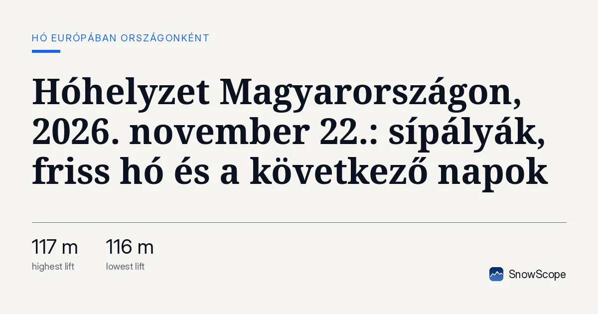

Hóhelyzet Magyarországon, 2026. november 22.: sípályák, friss hó és a következő napok
Magyarország továbbra is hó nélkül marad a térképezett magas területeken, míg az országhatáron túl Szlovákia a csúcsainak 13 %-án fehér. Ez a különbség meghatározza, hol lehet sízni az elkövetkező héten: az előrejelzés az első igazi hóesés lehetőségét csütörtök, 26. november-ben hozza, de csupán 6 cm várható aznap.
Nézze meg a hó-előrejelzést (Babos Síklub) a SnowScope alkalmazásbanHóvastagság, riasztások és 3D térkép, ingyen.
Miért számít most a határvonal
A szezonkezdetű hó nem terül el egyenletesen. 22. november-én Magyarország minden nyomon követett síközpontjában 0 cm van, de Szlovákia legmagasabb csúcsa, a Vysoké Tatry 33 cm-en áll. A különbség nem csak a tengerszint feletti magasságtól függ: azt adja, hogy az utolsó viharok hova mentek.
Aki ezen a héten az egyik vagy másik ország között választ, annak a döntés egyértelmű. Szlovákiának most előnye van, és ez a vezető valószínűleg az elkövetkező héten tovább nő.
| Country | White | Deepest resort | Next 7 days |
|---|---|---|---|
| Hungary | 0 % | Babos Síklub | 8 cm |
| Slovakia | 13 % | Vysoké Tatry | 10 cm |
| Romania | 25 % | Balea Lac | 51 cm |

Mit mutat a régió ma
A térképezett magyarországi magas területeken 0 % a hóval borított terület. Egyetlen síközpontnak sincs még mélysége. A hóval borított terület 0 km², tegnap és egy héttel ezelőtt sem változott.
Románia, a dél és keleti részen, előrébb jár: 25 % fehér, a Balea Lac-nál 17 cm. Szlovákia 13 %-os fedöttsége Magyarország és Románia között helyezkedik el, amely azt jelzi, hogy a hó egyenetlenül terült el a régió felett.
Az első hónapok: 26. november
Csütörtök, 26. november az előrejelzés leghavasabb napja, amikor a legmagasabb lejtőkön akár 6 cm várható. Ez az a nap, amelyre figyelni kell. Addig az elkövetkező három nap 0 cm csapadékot hoz: a régió szárazzá marad szerdai este vagy csütörtök reggelig.
Az egy nap alatt 6 cm nem tölt be síközpontokat, de ez a tél kezdetét jelzi. A sziklák még közel lesznek a felszínhez, és az alatta lévő bázis vékony és változó lesz.
Az időjárás kilátása e héten túl
Az elkövetkező hét akár 8 cm csapadékot kínál, szinte minden 26. november-én esik. Utána az előrejelzés bizonytalanságba szakad. A 8-14. nap (nagyjából november 30. - december 6.) a leghavasabb terepen akár 7 cm csapadékot mutat, ami arra utal, hogy a hóesés esélye december első hetének későbbi részében javul.
Ez a minta jellemző a magyarországi hegységekre november vége felé: egy nedves, enyhe időszak, amelyet egy hideg időjárás-fordulat követ, amely havat hoz. Az erre az időszakra utazni tervező síelőknek november 26-ára kell célozniuk, ha az megfelel nekik, vagy váljanak december elejéig, amikor az hosszú távu előrejelzés több havat tartalmazhat.
Milyen volt az elmúlt hét
November 16-22. között a fehér terület nem mozdult: 0 km² minden nap. A legmélyebb síközpont háromszor változott—a Babos Síklub, a Bánkút síklub és a Kékestető Sícentrum is az élén jártak—de egyik sem lépte túl a 0 cm-t. Ez a stabilitás, még hó nélkül, jellemző a régióra ebben a dátumban.
Az 500 m feletti egyetlen magassági sáv sem fehér túlnyomórészt. A hóhatár még nincs meghatározva, mert nincs hó a méréshez.
Mit várjunk a lejtőkön
November 26-ig a prepared pályák meztelen talajon vagy a korábbi szezonokból származó vékony régi havon maradnak. Amikor csütörtök 6 cm hó esik, az hideg alapon lesz friss. Ez az összefüggés trükkös lehet: a friss hó egy kemény, fagyott felületen rosszul tapad, és hajlamos a csúszásra meredek terepen.
Ha 26. november-én kint vagy a hegyekben, figyelj az éleken lévő hóra, amely szelekkel felszedett és egyenetlen lesz. A magasabb síközpontokhoz vezető utak, miután a hó megérkezik, téli gumikat vagy láncokat igényelhetnek.
Tippek síelőknek
- Várd meg csütörtök, 26. november-ét, ha friss hón akarsz sízni; addig a síközpontok meztelenek vagy majdnem üresen lesznek.
- Az új hó egy hideg, kemény alapon könnyen csúszik a meredek lejtőkön. A felszínt teszteld le, mielőtt kitett tereptől függesz.
- Figyelj az élekre és párkányokra 26. november után: a szelekkel felszedett hó másképpen viselkedik, mint a völgyekben lévő friss puha hó.
- Nézd meg az előrejelzést újra kedden, 24. november-én. Az időzítés általában megbízható, de a havas mennyiségek változhatnak.
- Ha ledöntésből tervezel, vizsgáld meg a hivatalos lavinafigyelmeztető közleményt, mielőtt kilépnél, különösen a meredek észak-nyugati lejtőkön friss hó után.
About these numbers
Resort snow depths are the deepest snow on the resort's upper slopes on the date shown; they are estimates for an area, not a measurement at one point. Forecasts can change. Always read the official avalanche bulletin before going off-piste.
Cite this report
For research, teaching or the press: the numbers and charts are free to reuse under CC BY 4.0 with this citation.
SnowScope (2026), Hóhelyzet Magyarországon, 2026. november 22.: sípályák, friss hó és a következő napok, https://snowscope.app/blog/hu/2026/11/hungary-snow-vs-neighbours-22-november-2026.html, accessed 2026-11-22
SnowScope (Atlas Labs). (2026, November 22). Hóhelyzet Magyarországon, 2026. november 22.: sípályák, friss hó és a következő napok. SnowScope snow reports. https://snowscope.app/blog/hu/2026/11/hungary-snow-vs-neighbours-22-november-2026.html
BibTeX
@misc{snowscope2026hungarysnowvsneighbours2,
author = {{SnowScope (Atlas Labs)}},
title = {Hóhelyzet Magyarországon, 2026. november 22.: sípályák, friss hó és a következő napok},
year = {2026},
month = nov,
howpublished = {\url{https://snowscope.app/blog/hu/2026/11/hungary-snow-vs-neighbours-22-november-2026.html}},
note = {Published 2026-11-23 00:50 UTC; accessed 2026-11-22}
}· CC BY 4.0 · Methods, data and tools →
Babos Síklub: snow and temperature by height, this winter vs last (tools) →
Follow Babos Síklub
Ingyen: üzenet, ha friss hó jön, és az előrejelzés minden reggel.